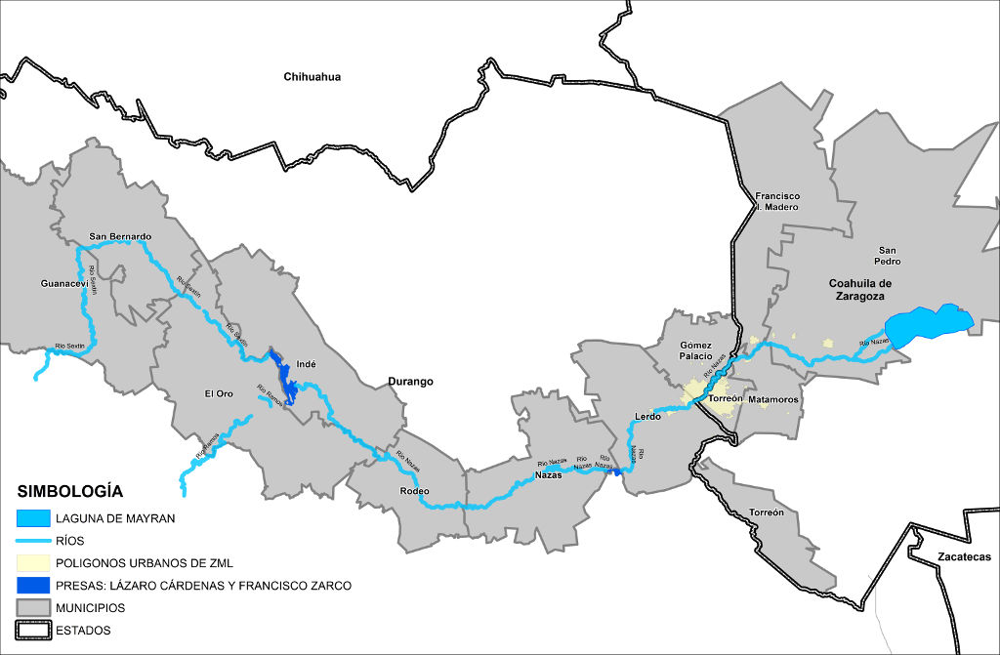

La Comarca Lagunera debe su nombre a las antiguas lagunas que se encontraban en la región, de las cuales sobresalía la laguna de Mayrán y la de Viesca, irrigadas por los ríos Nazas y Aguanaval respectivamente.
Grandes preguntas surgen en muchos habitantes de esta región: ¿cómo fue que se secaron estas lagunas? ¿por qué el Río Nazas solo lleva agua hasta antes del área urbana de la Zona Metropolitana de La Laguna (ZML)? ¿qué implicaciones medio ambientales conlleva esto? Para intentar responder estas preguntas, es preciso comprender desde donde viene este importante recurso.
México se encuentra dividido en 731 cuencas hidrológicas. Una cuenca es un área geográfica por donde transita el agua hacia una corriente principal. Son las cuencas de los Ríos Nazas y Aguanaval las que irrigan la ZML. Ambas cuencas se dividen a su vez en cuenca alta, media y baja respectivamente.
El Río Nazas tiene su origen en la Sierra Madre Occidental donde confluyen los ríos Sextin, del Oro, Ramos-Potrillos, Tepehuanes y de Santiago. Es en esta cuenca alta, donde fue construida en 1946 la presa Lázaro Cardenas (El Palmito). Esta presa de tipo captadora, regula las aguas de los ríos Sextin y Ramos, y la deriva en lo que es el punto de origen del Río Nazas.
Posteriormente, el río sigue su cauce natural en su cuenca media, hasta llegar a la cuenca baja donde fue construida la Presa Francisco Zarco (Las Tórtolas) en 1968. Ubicada entre los municipios de Nazas, Cuencamé y Lerdo, esta presa se encarga de regular el caudal del río en su cauce natural, llegando hasta la represa San Fernando en el municipio de Lerdo, muy cerca del área urbana.
Es en este punto, donde el agua es derivada hacia una red de canales artificiales que se encargan de llevar el recurso de riego hasta las diferentes zonas agrícolas de la Comarca. Y es también en este punto, donde el Río Nazas deja de llevar caudal de manera regular, y se convierte en un lecho seco la mayor parte del tiempo; pasando por la zona urbana, hasta llegar a lo que fue la Laguna de Mayrán.
Asimismo el Río Nazas lleva agua en el área natural protegida el Cañón de Fernández todo el año. También es conocido como "Parque Estatal Cañón de Fernández" y fue declarado como Sitio Ramsar.
La Zona Metropolitana de la Laguna se alimenta del agua contenida en el acuífero Principal de la Comarca. Éste acuífero permanece sobreexplotado, siendo que sus principales fuentes de recarga son el Río Nazas y el Aguanaval.
Es decir, su uso no es equilibrado. La extracción es mayor a la recarga estimada. Es de vital importancia que se recapacite en el uso que se le da al recurso, con el fin de garantizar el abastecimiento y la calidad del agua para el futuro.

El déficit
La principal actividad económica por dedicación en La Laguna es el sector agropecuario, en el distrito de riego 017 existen cerca de 38 000 productores tanto del sector privado como ejidal. La existencia de este distrito de riego hace del sector agrícola el mayor consumidor de agua y productor de insumos para la industrialización de lácteos y otros productos agropecuarios, además de forrajes para mantener el ganado, producción de algodón, hortalizas y frutales.
En la actualidad se sabe que la de La Laguna es la cuenca lechera más importante de México, además de la actividad agropecuaria, existen el sector agroindustrial y el textil, que también han aumentado la demanda de agua en la zona urbana. A esto se añade que la región de la Comarca es una zona árida con clima muy seco y escasa precipitación.
El Programa Irritila, dedicado a conservar y restaurar la cuenca alta del Río Nazas, establece que ésta representa la mayor fuente de agua de recarga para los acuíferos de la región. El objetivo del proyecto es mejorar la captación de escurrimientos de agua en el Río Nazas y con ello incrementar la recarga que recibe el acuífero principal.
Se estima que en esta zona el bosque tiene un alto grado de degradación y se encuentra en proceso de cambio de vegetación, además el pastoreo de ganado y la degradación de la cobertura vegetal están presentes en una parte importante de la superficie de la cuenca alta.
De acuerdo con la Conagua en el documento “Disponibilidad de Acuíferos” publicado en 2015, la recarga anual del acuífero principal es de 518.9 millones de metros cúbicos al año y la extracción total es de es de 1,221.8 millones de metros cúbicos al año, de los cuales 1,045.2 corresponden a uso agrícola, 127.8 a uso urbano y 23.1 a uso industrial.
Existe un déficit muy considerable y ya no hay volumen de agua disponible para una mayor extracción. Todo esto ha ocasionado una tendencia hacia el abatimiento del nivel del agua subterránea, con el riesgo de que se incremente cada vez su deterioro.
Características de las presas
| Nombre Oficial | Nombre Común | Capacidad al NAME (hm3) | Capacidad al NAMO (hm3) | Capacidad muerta (hm3) | Altura de la cortina (m) | Año de Terminación |
|---|---|---|---|---|---|---|
| Lázaro Cárdenas | El Palmito | 3,336 | 3,336 | 95.00 | 104.70 | 1946 |
| Francisco Zarco | Las Tórtolas | 436 | 365 | 29.90 | 39.50 | 1968 |
- NAME: Nivel de Agua Máximo Extraordinario
- NAMO: Nivel de Agua Máximo Ordinario
- Fuente: CONAGUA